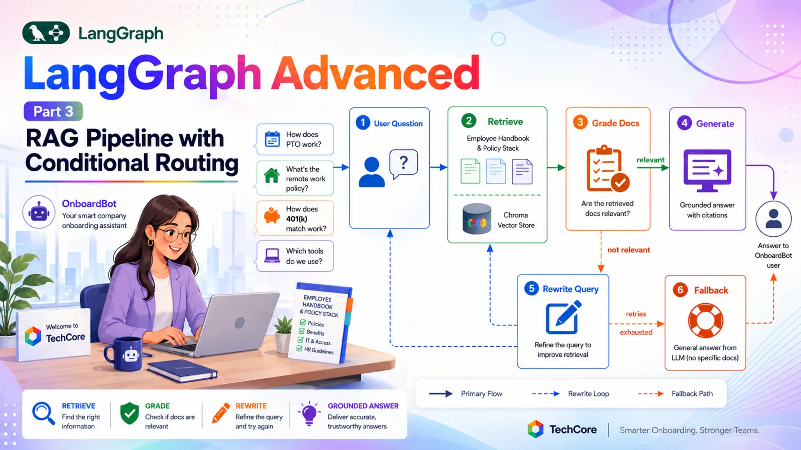
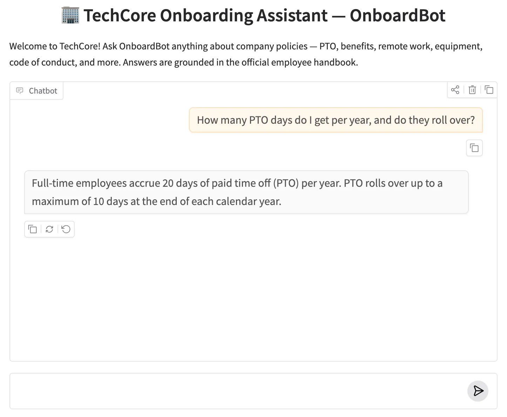

LangGraph Advanced: Part 3 — RAG Pipeline with Conditional Routing

📚 Table of Contents
- 1. Why RAG for AI Agents?
- 2. Installation & Setup
- 3. Understanding Corrective RAG
- 4. Building the Knowledge Base
- 5. Building the State
- 6. Building the Nodes
- 6.1 Retrieve Node
- 6.2 Grade Documents Node
- 6.3 Rewrite Query Node
- 6.4 Generate Node
- 6.5 Fallback Node
- 7. Assembling the Graph
- 8. Complete Example: OnboardBot
- 8.1 Architecture Overview
- 8.2 Project Structure
- 8.3 Runner & Console Output
- 8.4 What to Try
- 8.5 Graph Diagram
- 9. Web Interface
- 10. Conclusion
🏢 1. Why RAG for AI Agents?
🤔 The Retrieval Problem
Picture your first day at TechCore, a mid-size tech company. HR has sent a welcome email, your laptop is on your desk, and you have forty questions before lunch: How many vacation days do I get? Is remote work allowed? What's the 401k match? What tools does the team use? The answers exist somewhere in a 40-page employee handbook — but no one reads that on day one.
You could ask a plain LLM those questions. It'll answer confidently — and most of what it says will be made up. An LLM has no idea that TechCore's PTO policy changed last quarter, or that the 401k match vests after exactly one year. General training knowledge simply can't substitute for company-specific facts, and hallucinations here mean real problems: filing incorrect leave requests, setting wrong expectations with a manager.
Retrieval-Augmented Generation (RAG) fixes this by grounding the LLM's response in actual documents. Instead of relying on training data, the system retrieves the relevant sections of the handbook and feeds them into the prompt as context. The LLM's job shifts from guessing to synthesising.
🔄 Corrective RAG
But retrieval alone isn't enough. What happens when the vector store returns documents that don't actually address the employee's question? If the system blindly generates from irrelevant chunks, it produces confident answers that are wrong — just wrong in a different way. That's where conditional routing comes in: the graph must assess whether retrieved documents are relevant before deciding how to proceed.
This pattern — retrieve, grade, and then loop back to refine if the result is poor — is known as Corrective RAG (CRAG). LangGraph is the ideal framework for implementing it because each step is a discrete node. Nodes can inspect state, make decisions, and route to different successors — giving RAG the ability to be self-correcting.
🤖 Our Scenario: OnboardBot
Throughout this post we'll build OnboardBot — an AI Company Onboarding Assistant for TechCore. New employees ask OnboardBot questions in plain English. The bot retrieves the relevant policy documents from a Chroma vector store, grades their relevance with a structured-output LLM call, and then either generates a grounded answer, rewrites the query for a second retrieval pass, or falls back to general knowledge if all retries are exhausted.
What you'll build: A fully functional RAG pipeline as a LangGraph graph — five nodes (retrieve, grade, rewrite, generate, fallback) connected by conditional edges, wrapped in a Gradio chat UI. The knowledge base contains 10 TechCore policy documents covering PTO, benefits, remote work, equipment, the code of conduct, and more.
Retrieve Node
Fetches the top-K most similar policy documents from the Chroma vector store using Google Gemini embeddings on every question.
Grade Documents Node
Uses a structured-output LLM call to score retrieved documents as relevant or not_relevant before any answer is generated.
Rewrite Query Node
When documents are irrelevant, rewrites the question with HR-friendly terminology and loops back to retrieve for a second attempt.
Generate & Fallback Nodes
Generate produces grounded answers from retrieved policy text. Fallback responds from general knowledge when all retries are exhausted.
⚙️ 2. Installation & Setup
This project requires Python 3.12 and a Google Gemini API key. It adds two new packages compared to earlier posts in this series — chromadb for the vector store engine and langchain-chroma for the LangChain integration layer.
1. Check your Python version:
2. Create and activate a virtual environment:
3. Install dependencies from requirements.txt:
4. Create your .env file in the langgraph/ root folder. Get a free key at Google AI Studio:
⚠️ Never commit your .env file. Add it to .gitignore before your first commit — it contains your API key.
5. Project structure:
config.py and llm.py handle environment loading (Section 2.1). knowledge_base.py builds the vector store (Section 4). state.py defines what flows through the graph (Section 5). nodes.py implements all five node methods (Section 6). graph.py wires them together with conditional edges (Section 7). onboarding_runner.py runs demo queries (Section 8) and app.py launches the web UI (Section 9).
⚙️ Configuring the LLM
config.py reads all settings from the .env file. Two fields are new compared to previous posts: EMBEDDING_MODEL names the Google embeddings model used to index and query the vector store, and MAX_QUERY_RETRIES sets the maximum number of rewrite loops before the graph falls back to general knowledge.
llm.py is the same thin wrapper used across the LangGraph Advanced series — a ChatGoogleGenerativeAI instance that reads model settings from Config:
🧠 3. Understanding Corrective RAG
Standard RAG is a three-step linear pipeline: embed the question, search a vector store for similar documents, and generate a response using those documents as context. You can implement this as a LangChain chain — a single, sequential pipeline that runs all three steps in one call. That works for prototypes, but chains have a fundamental limitation: there's no way to branch based on what retrieval returned.
What if the retrieved documents are completely irrelevant? A chain generates from them anyway. What if the question was phrased in a way that the vector store missed the right documents? A chain has no mechanism to rephrase and retry. LangGraph changes this by modelling each step as a discrete node. Nodes can inspect state and route to different successors — giving RAG the ability to be self-correcting.
✅ RAG as a chain vs. RAG as a graph: A chain executes all steps unconditionally. A graph can check the quality of retrieval and take a different path — rewrite the query, call a different retriever, or fall back to general knowledge. That's the fundamental upgrade this post teaches.
The OnboardBot graph has five nodes connected by conditional edges. Every question starts with retrieve. The fetched documents go to grade_documents, which asks an LLM whether they're relevant. The router reads that grade — and the current retry_count — and picks one of three paths:
- Relevant documents: route to generate — produce a grounded answer from the retrieved policy text.
- Not relevant, retries remaining: route to rewrite_query — rephrase the question with better terminology, increment retry_count, and loop back to retrieve for a second attempt.
- Not relevant, retries exhausted: route to fallback_generate — answer from general LLM knowledge and point the employee to HR for official guidance.
The rewrite_query → retrieve edge is what creates the loop. Each pass re-embeds the (now rewritten) question and fetches a fresh set of documents. The retry_count field in state ensures the loop terminates — once it reaches Config.MAX_QUERY_RETRIES, the router stops returning "rewrite_query" and routes to the fallback instead.
🗄️ 4. Building the Knowledge Base
The knowledge base is TechCore's employee handbook — 10 policy documents covering the topics a new hire asks about most. Each document is a self-contained paragraph, which keeps chunks at a sensible size for embedding and retrieval. They live as a Python list in knowledge_base.py, making the project fully self-contained without any file loading or preprocessing pipeline.
💡 Why hardcode the documents? For this tutorial, hardcoded documents mean zero setup friction. In a production system you'd replace POLICY_DOCUMENTS with a document loader — PyPDFLoader for PDFs, ConfluenceLoader for your team wiki, etc. The rest of the graph stays identical.
The 10 policy documents cover:
- PTO policy — 20 days accrual, 10-day rollover cap, advance notice rules
- Sick leave — 10 days, mental health days, family care coverage
- Benefits — health insurance, 401k 4% match, $1,200 wellness stipend, parental leave
- Work hours & remote work — core hours, 3-day remote policy, $500 home office stipend
- Equipment — MacBook Pro M3, peripherals portal, MDM enrolment
- Code of conduct — harassment policy, compliance training, ethics hotline
- Development tools & tech stack — Python, React, AWS, GitHub, Jira, Confluence
- Communication channels — Slack, Google Meet, response time expectations
- Performance review — bi-annual cycle, 360 feedback, salary and promotion timeline
- Week-1 onboarding checklist — I-9, dev-setup repo, 1:1 scheduling, Workday profile
build_vectorstore() uses GoogleGenerativeAIEmbeddings with the models/text-embedding-004 model to embed all documents and stores them in an in-memory Chroma index. The entire knowledge base is embedded once at startup when OnboardingGraph.__init__ runs — not on every question. The metadata on each document (e.g. "source": "pto_policy") can be used for filtering or source citation in a production system.
🗂️ 5. Building the State
The state is the shared data structure that flows through every node in the graph. For a RAG pipeline with conditional routing, the state carries more than just messages — it needs to hold the current question (which changes on a rewrite), the retrieved documents, the relevance grade, and a retry counter. Each field serves a specific purpose in the routing logic.
Here's why each field exists and how it flows through the graph:
| Field | Type | Purpose |
|---|---|---|
| messages | Annotated[list, add_messages] | Accumulates the conversation (user question + AI answer). The add_messages reducer appends rather than overwrites, so the full exchange is preserved. |
| question | str | The working search term used for vector store retrieval. Stored separately from messages so rewrite_query_node can update it without touching the message history. |
| documents | list[Document] | Policy documents returned by the last retrieval pass. Uses last-write-wins — each retrieval replaces the previous results. Read by both the grader and the generate node. |
| doc_grade | str | Set by grade_documents_node to "relevant" or "not_relevant". The router function reads this to pick the next node. |
| retry_count | int | Incremented by rewrite_query_node each pass. Once it reaches Config.MAX_QUERY_RETRIES, the router routes to fallback_generate instead of retrying. |
📌 Why is question separate from messages? The user's original phrasing in messages is the conversation record — it's never modified. question is the working search term. On a retry, rewrite_query_node updates question with better vocabulary so the second retrieval uses more precise terms, while the conversation history still shows the original phrasing.
🔧 6. Building the Nodes
All five node methods live in the RAGNodes class in nodes.py. The class receives the vector store in its constructor, wraps it in a retriever, and loads all four prompt files. Every prompt lives in the prompts/ subfolder and is loaded once at construction — never hardcoded inline.
The GradeDecision Pydantic model uses Literal types so the grader LLM can only return exactly "relevant" or "not_relevant" — the same structured-output approach used for supervisor routing in Part 2. self.grader_llm is a separate binding for the same underlying LLM; the main self.llm is used for text generation without constraints.
🔍 Retrieve Node
The retrieve node calls the retriever with the question field from state and stores the returned documents back in state. On the first pass, question is the original employee query. On a retry after rewrite_query, it's the rewritten version — so the second retrieval uses better search terms without any other changes to this node.
self.retriever.invoke(question) embeds the question using the same Google Gemini embeddings model used to index the documents, then returns the k most similar chunks by cosine distance. The result list is stored under "documents" — using last-write-wins, so each retrieval pass replaces the previous results.
⚖️ Grade Documents Node
The grade documents node is the quality gate of the pipeline. It sends the question and all retrieved documents to the LLM and asks: do these documents actually help answer this question? The response is constrained to GradeDecision via with_structured_output, so the router always receives a clean string — never unexpected free text.
The prompt in prompts/grade_documents.txt instructs the LLM to grade "relevant" only when documents genuinely address the question — tangential mentions that wouldn't help form a useful answer should be graded "not_relevant". The reasoning field in GradeDecision is included so the LLM explains its decision, which helps with debugging.
✏️ Rewrite Query Node
When the grader returns "not_relevant" and retries remain, the rewrite node tries to fix the retrieval failure by rephrasing the question. The prompt instructs the LLM to use HR-friendly terminology — for example, "paid time off" instead of "vacation days", or "401k contribution matching" instead of "retirement savings" — which increases the chance of matching the exact phrasing in the policy documents. The rewritten question replaces state["question"], and retry_count is incremented.
✅ Why update retry_count here and not in the router? The router is a pure function — it reads state, returns a string, and has no side effects. Incrementing a counter is a state mutation, so it belongs in a node. The rewrite node is the logical place because it's the action that triggers the retry.
💬 Generate Node
The generate node runs only when the grader has confirmed that retrieved documents are relevant. It formats all documents into a single context string and injects them into the system prompt via the {context} placeholder defined in prompts/generate_with_rag.txt. The LLM then generates an answer grounded in those policy excerpts.
Prepending the conversation after the system message means the LLM sees policy context first, then the employee's question — the standard pattern across this series. The response is returned as a new message, and the add_messages reducer appends it to state["messages"] automatically.
🔄 Fallback Generate Node
When all retrieval retries are exhausted, the fallback node responds from general LLM knowledge. The prompt in prompts/generate_fallback.txt instructs OnboardBot to provide a helpful general answer and recommend the employee contact HR for official TechCore-specific guidance. This keeps the user experience graceful — the bot doesn't just say "I don't know", it gives what it can and points to the right resource.
🔗 7. Assembling the Graph
🔀 The Route Function
The router is a plain Python function — no decorators, no LangGraph magic. It reads two fields from state and returns a string that names the next node. The three possible return values map directly to the three branches of the pipeline:
The logic reads from top to bottom: relevance check first, then the retry guard, then the default rewrite path. If doc_grade is "relevant", the answer is generated regardless of retry_count. If documents are not relevant and retries are exhausted, the fallback fires. Otherwise, the query is rewritten and retrieval is retried.
🔌 Wiring the Pipeline
The explicit mapping dict in add_conditional_edges does two things: it validates that the router can only return one of the three named keys (any other value raises a runtime error at test time), and it ensures those keys appear as edge labels in the generated Mermaid diagram. Without the dict, LangGraph still routes correctly but the graph visualisation loses the label context.
📌 How does LangGraph handle the retry loop? graph.add_edge("rewrite_query", "retrieve") is a regular forward edge that happens to point to a node that was already visited. LangGraph has no concept of "backwards" edges — it follows directed connections. The loop terminates because retry_count grows with each pass until the router stops returning "rewrite_query".
The graph is compiled without a checkpointer — each question is a fresh, independent invocation with no cross-question memory. This is the right choice for a policy lookup tool where every question stands on its own. If you wanted to support multi-turn follow-up questions, adding MemorySaver and a thread ID would be enough — the graph structure itself doesn't need to change.
🏗️ 8. Complete Example: OnboardBot
🔍 Architecture Overview
📁 Project Structure
▶️ Runner & Console Output
OnboardingRunner wraps the graph and exposes a single ask(question) method. Each call is a fresh, independent graph invocation — state initialises with the question, an empty documents list, and retry_count = 0. The if __name__ == "__main__" block runs four demo queries that exercise the different paths through the graph.
Demos 1, 2, and 4 retrieve relevant policy documents on the first pass and generate grounded answers. Demo 3 — asking about Python ML libraries — retrieves documents about TechCore's dev stack (tech stack policy and remote work policy), but the grader correctly identifies these as not answering the question. After rewriting and retrying, the results are still not relevant, and the fallback node answers from general knowledge with a pointer to the engineering team.
💡 What to Try in the Web UI
These queries exercise the different paths through the graph — from direct retrieval hits to the rewrite loop and the fallback path:
📊 Graph Diagram
The graph is visualised automatically when you run onboarding_runner.py. The save_figure() method in OnboardingGraph exports both a graph.mmd (Mermaid source) and a graph.png to the figure/ folder.
Figure 1: The OnboardBot graph — five nodes with a conditional branch at grade_documents. The rewrite_query → retrieve back-edge creates the retry loop.
🌐 9. Web Interface
The Gradio interface wraps OnboardingRunner.ask() in a clean chat UI. Because each question is stateless — no thread IDs, no session memory — the app is the simplest pattern in this series: a bare gr.ChatInterface with a two-argument respond function.
The web UI starts at http://127.0.0.1:7860. The knowledge base is embedded when the app starts — expect a few seconds of startup time while documents are indexed. Once running, each question goes through the full retrieve → grade → (generate or rewrite → fallback) pipeline. Responses are grounded in actual policy text for known topics and fall back gracefully for everything outside the handbook.

OnboardBot web UI — asking about PTO policy returns a grounded answer from the employee handbook.
✅ Extending the knowledge base: To point OnboardBot at real documents, replace POLICY_DOCUMENTS in knowledge_base.py with your own list[Document] objects — the rest of the graph is unchanged.
OnboardBot's knowledge base contains 10 TechCore policy documents that are embedded into the vector store at startup. Every question is matched against these documents — no external files need to be uploaded:
| # | Document | Key Details |
|---|---|---|
| 1 | pto_policy | 20 days/year accrual, 10-day rollover cap, advance notice rules, full payout on separation |
| 2 | sick_leave_policy | 10 paid sick days, resets Jan 1, family care covered, mental health days fully recognised |
| 3 | benefits_overview | Medical (85% company-paid), 401k with 4% match (vests after 1 yr), $1,200 wellness stipend, parental leave |
| 4 | work_hours_policy | 40-hr week, core hours 10 AM–4 PM, 3 remote days/week, $500 home office stipend, 1.5× overtime |
| 5 | equipment_policy | MacBook Pro M3 on Day 1, IT portal for peripherals, VPN required, MDM enrolled |
| 6 | code_of_conduct | Harassment policy, annual compliance training within 30 days, anonymous ethics hotline |
| 7 | dev_tools | Python/FastAPI, React/TS, PostgreSQL, AWS, Docker/K8s, GitHub, Jira, Confluence |
| 8 | communication_policy | Slack primary, Google Meet for calls, async preferred, Slack reply ≤4 hrs / email ≤24 hrs |
| 9 | performance_review | Bi-annual (June + December), 5-point scale, salary and promotions decided at year-end |
| 10 | onboarding_checklist | Day-by-day tasks for Week 1: I-9, laptop setup, Slack profile, security training, dev environment |
💡 What to Try
These queries exercise each routing path in the graph — from direct policy hits to the rewrite loop and the fallback path:
✅ 10. Conclusion
In this post you built OnboardBot — a self-correcting RAG pipeline implemented entirely as a LangGraph graph. Rather than a linear chain that blindly generates from whatever retrieval returns, the graph grades document relevance, rewrites failing queries, and falls back gracefully when retries are exhausted. Every decision is a discrete, inspectable node — not buried inside a single black-box call.
This Corrective RAG pattern scales naturally beyond a single onboarding use case. Swap the in-memory document loader for a production vector store (Pinecone, Weaviate, or a managed ChromaDB instance) and the same graph handles millions of documents without a node change. Add a re-ranker between retrieve and grade_documents to push retrieval precision higher before the LLM ever sees the results. Chain OnboardBot's output into the Multi-Agent Supervisor from Part 2 and it becomes one specialist agent in a broader workforce — the supervisor simply routes HR questions to OnboardBot while routing technical queries elsewhere. The graph structure remains identical; only the surrounding orchestration changes.
The five core concepts to take away:
- RAG as a graph: modelling retrieve, grade, rewrite, generate, and fallback as separate nodes makes each step observable and independently testable.
- Structured output for routing: with_structured_output(GradeDecision) ensures the grader always returns a valid routing key — never unexpected free text.
- Retry loops with a safety valve: rewrite_query → retrieve is just a back-edge in the graph. retry_count in state guarantees termination.
- Separate question from messages: the working search term can be rewritten without touching the conversation record the user sees.
- Graceful fallback: when retrieval fails completely, a dedicated fallback node keeps the user experience useful rather than returning an empty error.
🔗 LangGraph Advanced series: Part 1 covered bounded conversation memory with LangGraph Advanced: Part 1 — Bounded Memory Window. Part 2 built a Multi-Agent Supervisor Architecture. This post (Part 3) implemented a RAG Pipeline with Conditional Routing. Parts 4 and 5 continue with tool orchestration patterns and production deployment — coming up next.

Technical Stacks
 Python
Python
 LangGraph
LangGraph
 LangChain
LangChain
 Gemini AI
Gemini AI
 Chroma
Chroma
 RAG
RAG
 Gradio
Gradio

References
-
 GitHub Repository:
advanced-3-rag-conditional-routing
GitHub Repository:
advanced-3-rag-conditional-routing
- LangGraph Documentation: langchain-ai.github.io/langgraph
- LangChain — Chroma Integration: LangChain Chroma docs
- LangChain — Google Generative AI Embeddings: Google Embeddings docs
- Corrective RAG (CRAG) Paper — Shi et al., 2024: arxiv.org/abs/2401.15884
- Google AI Studio (API key): aistudio.google.com